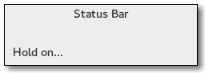

Gtk.Statusbar¶
Example¶

- Subclasses:
None
Methods¶
- Inherited:
Gtk.Box (14), Gtk.Container (35), Gtk.Widget (278), GObject.Object (37), Gtk.Buildable (10), Gtk.Orientable (2)
- Structs:
Gtk.ContainerClass (5), Gtk.WidgetClass (12), GObject.ObjectClass (5)
class |
|
|
|
|
|
|
|
|
|
|
Virtual Methods¶
|
|
|
Properties¶
- Inherited:
Gtk.Box (3), Gtk.Container (3), Gtk.Widget (39), Gtk.Orientable (1)
Child Properties¶
- Inherited:
Style Properties¶
- Inherited:
Name |
Type |
Default |
Flags |
Short Description |
|---|---|---|---|---|
|
d/r |
Style of bevel around the statusbar text |
Signals¶
- Inherited:
Name |
Short Description |
|---|---|
Is emitted whenever a new message is popped off a statusbar’s stack. |
|
Is emitted whenever a new message gets pushed onto a statusbar’s stack. |
Fields¶
- Inherited:
Name |
Type |
Access |
Description |
|---|---|---|---|
parent_widget |
r |
Class Details¶
- class Gtk.Statusbar(*args, **kwargs)¶
- Bases:
- Abstract:
No
- Structure:
A
Gtk.Statusbaris usually placed along the bottom of an application’s mainGtk.Window. It may provide a regular commentary of the application’s status (as is usually the case in a web browser, for example), or may be used to simply output a message when the status changes, (when an upload is complete in an FTP client, for example).Status bars in GTK+ maintain a stack of messages. The message at the top of the each bar’s stack is the one that will currently be displayed.
Any messages added to a statusbar’s stack must specify a context id that is used to uniquely identify the source of a message. This context id can be generated by
Gtk.Statusbar.get_context_id(), given a message and the statusbar that it will be added to. Note that messages are stored in a stack, and when choosing which message to display, the stack structure is adhered to, regardless of the context identifier of a message.One could say that a statusbar maintains one stack of messages for display purposes, but allows multiple message producers to maintain sub-stacks of the messages they produced (via context ids).
Status bars are created using
Gtk.Statusbar.new().Messages are added to the bar’s stack with
Gtk.Statusbar.push().The message at the top of the stack can be removed using
Gtk.Statusbar.pop(). A message can be removed from anywhere in the stack if its message id was recorded at the time it was added. This is done usingGtk.Statusbar.remove().- CSS node
Gtk.Statusbarhas a single CSS node with name statusbar.- classmethod new()[source]¶
- Returns:
the new
Gtk.Statusbar- Return type:
Creates a new
Gtk.Statusbarready for messages.
- get_context_id(context_description)[source]¶
- Parameters:
context_description (
str) – textual description of what context the new message is being used in- Returns:
an integer id
- Return type:
Returns a new context identifier, given a description of the actual context. Note that the description is not shown in the UI.
- pop(context_id)[source]¶
- Parameters:
context_id (
int) – a context identifier
Removes the first message in the
Gtk.Statusbar’s stack with the given context id.Note that this may not change the displayed message, if the message at the top of the stack has a different context id.
- push(context_id, text)[source]¶
- Parameters:
context_id (
int) – the message’s context id, as returned byGtk.Statusbar.get_context_id()text (
str) – the message to add to the statusbar
- Returns:
a message id that can be used with
Gtk.Statusbar.remove().- Return type:
Pushes a new message onto a statusbar’s stack.
- remove(context_id, message_id)[source]¶
- Parameters:
context_id (
int) – a context identifiermessage_id (
int) – a message identifier, as returned byGtk.Statusbar.push()
Forces the removal of a message from a statusbar’s stack. The exact context_id and message_id must be specified.
Signal Details¶
- Gtk.Statusbar.signals.text_popped(statusbar, context_id, text)¶
- Signal Name:
text-popped- Flags:
- Parameters:
statusbar (
Gtk.Statusbar) – The object which received the signalcontext_id (
int) – the context id of the relevant message/statusbartext (
str) – the message that was just popped
Is emitted whenever a new message is popped off a statusbar’s stack.
- Gtk.Statusbar.signals.text_pushed(statusbar, context_id, text)¶
- Signal Name:
text-pushed- Flags:
- Parameters:
statusbar (
Gtk.Statusbar) – The object which received the signalcontext_id (
int) – the context id of the relevant message/statusbartext (
str) – the message that was pushed
Is emitted whenever a new message gets pushed onto a statusbar’s stack.